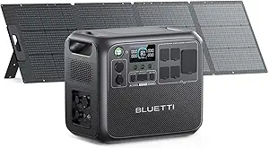
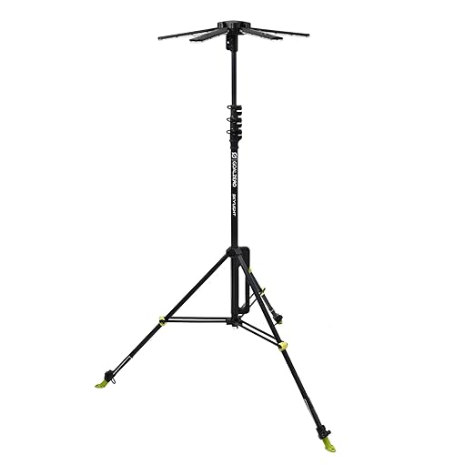
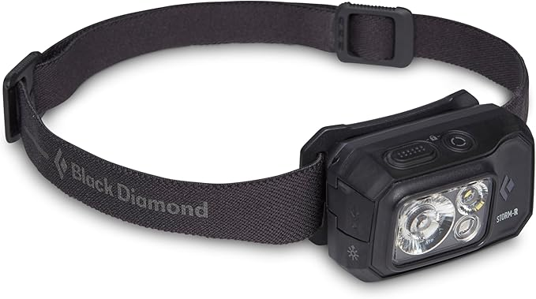
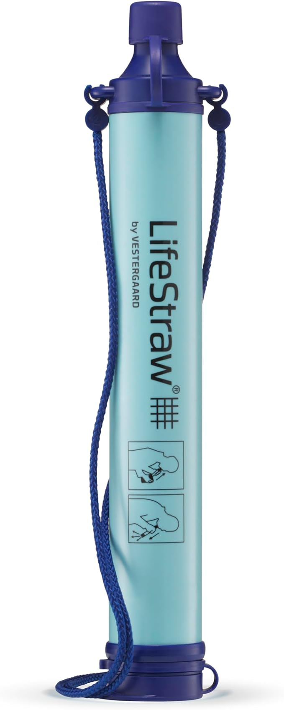
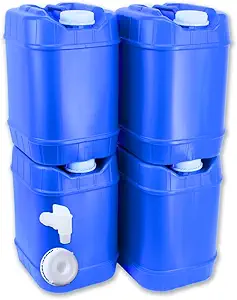
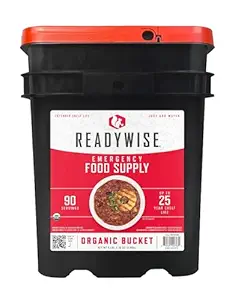
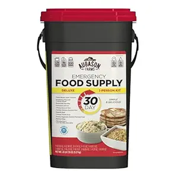
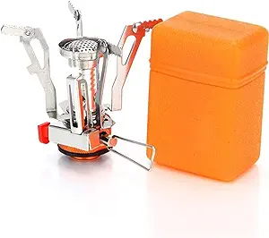

A lot of folks in the survival world turn their nose up at buying survival gear on Amazon. You know the type — the “gear snobs” who swear they only order from obscure tactical outfitters in the back of a ’99 gun magazine, as if that makes their compass more accurate or their tent more waterproof. Then you’ve got the basement hoarders — shelves stacked with thousands of dollars in untouched kit — who are 300-pound diabetics and couldn’t hike a mile if their life depended on it. They’ll lecture you on “proper preparedness” while wheezing halfway to the mailbox.
The truth? None of that matters if you’ve never put the gear to work. In a real emergency, nobody cares where your stuff came from — they care if it works, if you know how to use it, and if it’s close enough to grab when things go bad.
That’s why I buy a lot of my prepping and survival gear on Amazon. It’s fast. It’s reliable. I can get exactly what I need without waiting three weeks for some “elite” brand to process my order like they’re forging it from dragon steel. I also like that I can read hundreds (sometimes thousands) of honest reviews and see real ratings before I spend a dime — which means other people get to test the quality before I do. If something breaks, I send it back with a couple clicks. If something works, I buy more.
You don’t have to worship at the altar of overpriced specialty shops to be prepared. Half the gear that’ll keep you alive can be on your doorstep tomorrow, often for less than the tacti-cool brands want for the same thing with a logo slapped on it. I put this list together to make the process as simple and straightforward as possible. A cheat-code-esque quick start for anyone serious about prepping for their family’s future. These are items I personally use, trust, and recommend, because they’ve proven themselves where it matters most.

Solar Input
BLUETTI PV200 200W Foldable Solar Panel
The BLUETTI PV200 delivers 200 watts of reliable solar charging in a lightweight, foldable design that’s perfect for off-grid living, camping, and emergency preparedness. High-efficiency monocrystalline cells convert sunlight into clean power to keep your solar generators, power stations, and devices topped off anywhere. Weather-resistant, portable, and easy to set up — your ticket to free, renewable energy without relying on the grid or noisy gas generators.
Use cases: off-grid recharging, long outages, van life.

Light + Backup
Goal Zero Lighthouse 6000-Lumen Multi-Functional Adjustable Light
The Goal Zero Lighthouse 6000 is a rugged, USB-rechargeable lantern designed for camping, outdoor events, and emergency preparedness. Featuring adjustable 6,000-lumen brightness, a built-in hand crank for off-grid power generation, and up to 48 hours of runtime, it’s ready for blackouts or backcountry nights. Doubles as a power bank to charge phones and small devices, making it an essential addition to bug-out bags, RV setups, or home emergency kits. Built tough to survive the elements — because darkness shouldn’t stop you.
Use cases: blackout lighting, car kit, base camp, outdoor events.

Hands-Free
Black Diamond Storm 500-R Headlamp
The Black Diamond Storm 500-R Headlamp is a waterproof, USB-rechargeable powerhouse built for serious outdoor use. With 500 lumens of brightness, multiple beam settings, and red night vision mode, it cuts through darkness for hiking, camping, hunting, or emergency repairs. Its rugged, weather-sealed design thrives in rain, snow, and dust, making it an essential tool for survival kits, bug-out bags, and everyday carry. When night falls, this headlamp keeps you moving — and keeps wildlife at a respectful distance.
Use cases: night repairs, rain hikes, power outage.

Water On-The-Go
LifeStraw Peak Squeeze Water Filter
The LifeStraw Peak Squeeze is a compact, ultralight water filtration system that transforms unsafe water into clean, drinkable hydration in seconds. Designed for hikers, campers, preppers, and travelers, it removes 99.9999% of bacteria, parasites, and microplastics without chemicals or batteries. Use it as a squeeze bottle, inline filter, or gravity system for maximum versa
Use cases: hiking, bug-out bags, boil-water notices.
Tiny Tank
Sawyer MINI Water Filtration System
The Sawyer MINI is a lightweight, pocket-sized water filter capable of cleaning up to 100,000 gallons of water, removing 99.9999% of bacteria and protozoa. Versatile by design, it can be used as a straw, attached directly to standard water bottles, or integrated into a hydration bladder for hands-free filtering. Ideal for backpacking, emergency kits, and off-grid survival, it ensures safe drinking water from lakes, rivers, or questionable taps. At just 2 ounces, it’s one of the most trusted and field-tested water filters on the market.
Use cases: EDC, travel, backup to gravity systems.
Set & Forget
Platypus GravityWorks Group Camping Water Filter System
The Platypus GravityWorks is a high-capacity water filtration system designed for effortless hydration in the backcountry. Using a simple gravity-fed design, it filters up to 1.75 liters per minute, removing 99.9999% of bacteria and protozoa—no pumping required. Just fill the dirty reservoir, hang it, and let gravity deliver clean, great-tasting water directly into your clean bag. Perfect for group camping, base camps, overlanding, or extended off-grid stays, it’s compact, lightweight, and trusted by serious adventurers for its speed and reliability.
Use cases: base camp, families, long stays.
Gravity Filtration
Yuclet Gravity Water Filter System
Hands-free, high-capacity filtration for camp or emergencies. Fill the hanging reservoir, clip it up, and let gravity push water through the inline filter into your clean container—no pumping required. Compact, lightweight, and easy to backflush, it keeps groups hydrated during outages, road trips, or off-grid stays.
Use cases: group camping, base camps, emergency water.

Storage
5-Gallon Stackable Water Storage Containers with Lids + Spigot – Easy Fill Survival Supply for Emergency Water Storage, Camping, Disaster Preparedness, RV Use (20 Gallon Total)
Durable, stackable, and built for serious preparedness. Each 5-gallon container includes a lid and spigot for easy filling and pouring. Perfect for keeping your family hydrated during emergencies, camping trips, or long-term off-grid living.
Use cases: hurricane prep, disaster readiness, RV water storage.

Long-Term Food
ReadyWise Emergency Food Supply – 90 Servings Organic Bucket, Protein Meals, Dehydrated & Freeze-Dried Survival Food for Backpacking, Camping Essentials & Prepping Supplies, Up to 25-Year Shelf Life
Just add water for ready-to-eat, nutrient-packed meals. With a 25-year shelf life, this 90-serving organic bucket is perfect for emergency storage, camping, or long-term prepping. Lightweight, easy to store, and built to keep you fueled when it matters most.
Use cases: power outages, camping, long-term storage.

Calories That Wait
Augason Farms 30-Day Emergency Food Supply
This all-in-one emergency food bucket packs a full month of survival nutrition into a compact, easy-to-store container. With a variety of hearty, shelf-stable meals, it delivers over 54,000 calories — enough to keep one adult fed for 30 days. Just add water, and you’ve got breakfast, lunch, and dinner ready in minutes. Perfect for bug-out bags, long-term storage, camping trips, or weathering power
Use cases: storms, layoffs, inflation hedging.
Boil Fast
Portable Camping Stove with Piezo Ignition
This compact but powerful camping stove is built for fast, reliable cooking in the wild. Featuring a built-in Piezo ignition, it sparks to life instantly — no matches or lighters required. The wide, stable base and wind-resistant design keep your flame steady, even in challenging conditions. Boils water in minutes, simmers meals evenly, and packs down small enough to slip into a backpack or bug-out bag. Perfect for camping, hiking, hunting, fishing trips, or as an emergency backup stove during pow
Use cases: backpacking, blackout coffee, storm cooking.

Fuel Anywhere
Fitinhot Camp Wood Stove
The Fitinhot Camp Wood Stove is a portable powerhouse for heat and cooking in the backcountry. Built from high-grade, heat-resistant steel, it features a glass viewing window for monitoring your fire and chimney pipes for safe ventilation. Burns wood efficiently, putting out steady, reliable warmth while doubling as a compact cooking surface for meals off-grid. Includes heat-resistant gloves for safe handling, making it ideal for wall tents, hunting camps, ice fishing shacks, or emergency home heating during outages. Rugged, efficient, and field-ready — a true cold-weather survival essential.
Use cases: tent heating, outdoor cooking, long-term outages.
Morale Gear
GSI Outdoors Glacier Stainless Percolator
The GSI Outdoors Glacier Stainless Percolator proves that coffee isn’t just a luxury in the wild — it’s a survival essential. Crafted from ultra-durable, rust-resistant stainless steel, this percolator is built to handle open flames, camp stoves, or even a bed of glowing coals without warping. Its classic design delivers rich, bold coffee every time, keeping morale high when the grid’s down or mornings are cold. Perfect for camping trips, off-grid cabins, or your emergency kit, this rugged percolator ensures your caffeine supply never skip
Use cases: camp rituals, cold mornings, power loss.
Shelter
ALPS Mountaineering Lynx 2 Tent
The ALPS Mountaineering Lynx 2 Tent is a weather-resistant, easy-to-set-up shelter designed for two campers who value comfort and protection in the wild. Built with durable polyester fabric and factory-sealed seams, it’s ready to handle rain, wind, and unexpected storms without breaking a sweat. The freestanding design makes pitching fast and frustration-free, while the dual doors and vestibules give each person their own entry and gear storage. Perfect for backpacking, car camping, or as part of your emergency shelter kit, this tent combines reliable performance with the space you need to actually enjoy being inside.
Check Price on Amazon
Use cases: bug-out shelter, weekend trips, backups.
Multi-Tool Tarp
Wise Owl Outfitters Rain Fly Tarp
The Wise Owl Outfitters Rain Fly Tarp is the ultimate multi-use shelter solution for campers, hikers, and survivalists. Whether you need a waterproof rain fly for your hammock, a gear cover to protect supplies, a groundsheet for a dry sleeping area, or a quick sunshade on hot days, this tarp delivers. Made from durable, rip-resistant material with
Use cases: summer storms, hammock rigs, truck kits.
Warmth
Teton Sports Celsius XXL Sleeping Bag
The Teton Sports Celsius XXL Sleeping Bag is built for extreme cold and serious comfort, making it a favorite for winter campers, hunters, and adventurers who refuse to hibernate. Designed with a spacious interior for larger individuals or those who just like to stretch out, it features a soft flannel lining, durable shell, and mummy-style hood to lock in heat. Rated well below freezing, this sleeping bag feels like zipping yourself into a portable cabin, keeping you warm even in sub-zero conditions. Perfect for base camps, truck camping, and unheated cabins, it’s the relia
Use cases: winter camping, unheated cabins.
Emergency Heat
SOL Escape Bivvy
The SOL Escape Bivvy is a game-changing emergency sleeping system that does more than just keep you dry — it keeps you alive. Designed with a breathable, weather-resistant fabric, it reflects up to 90% of your body heat back to you without trapping condensation, so you stay warm without waking up soaked. Compact and lightweight, it fits easily in your pack, glove box, or survival kit, making it essential for hikers, campers, hunters, and emergency preppers. Whether you’re caught in an unexpected storm, stuck in your car during a winter breakdown, or spending an unplanned night outdoors, this bivvy ensures you retain warmth and stay protected until help arrives.
Use cases: daypack backup, car trunk, SAR kits.
Insulation
Klymit Static V Insulated Sleeping Pad
The Klymit Static V Insulated Sleeping Pad is engineered to keep you warm, comfortable, and off the cold ground in any season. Its V-shaped design limits heat loss while providing exceptional support, and the lightweight synthetic insulation adds an extra thermal barrier between you and the earth. It inflates quickly with just 10–15 breaths, packs down small for easy storage, and is rugged enough to handle rough terrain. Perfect for winter camping, backpacking, hunting trips, or as an emergency bed during power outages, this pad ensures you stay insulated, comfortable, and ready for whatever nature throws at you.
Use cases: winter bivy, guests during outages.
Navigation
The Garmin eTrex 32x GPS Handheld is a rugged, reliable navigation tool built for serious adventurers and emergency preparedness. Featuring preloaded TopoActive maps, a high-sensitivity receiver, and support for GPS and GLONASS satellite systems, it keeps you on course even in dense forests, canyons, or remote backcountry. Its 2.2-inch sunlight-readable color display works in rain, snow, or blazing sun, while the long battery life means days of navigation without a recharge. Lightweight yet impact-resistant, the eTrex 32x is perfect for hiking, hunting, off-road exploration, or as a backup navigation system when your phone or vehicle GPS fails.
Use cases: backcountry nav, hunting, storms.
Keep Talking
Midland GXT1000VP4 Two-Way Radios
The Midland GXT1000VP4 Two-Way Radios deliver clear, reliable communication when cell towers are down or out of range. With up to a 36-mile range in ideal conditions, 50 GMRS channels, and privacy codes to cut chatter, these rugged handheld radios are built for emergencies, off-grid adventures, hunting trips, and property security. NOAA Weather Alert and Weather Scan functions keep you updated on incoming storms so you can act before danger strikes. Water-resistant and designed for real-world durability, the GXT1000VP4 ensures your crew stays connected whether you’re coordinating a bug-out, running convoy operations, or navigating the backcountry.
Use cases: convoy, property security, trail comms.
Old-School Trust
Suunto MC-2G Compass
The Suunto MC-2G Compass is a professional-grade navigation tool trusted by hikers, hunters, military personnel, and survivalists worldwide. Featuring a global needle for accurate readings anywhere on Earth, this mirror sighting compass offers fast, precise bearings and exceptional reliability when GPS devices fail. The declination adjustment, luminous markings, and clinometer make it ideal for serious land navigation, map work, and wilderness expeditions. Built to handle extreme conditions, the MC-2G ensures you can stay on course even when batteries die, satellites glitch, or the weather turns hostile — making it a must-have for any bug-out bag or backcountry kit.
Use cases: map work, training, redundancy.
Fix Stuff
Leatherman Wave+ Multitool
The Leatherman Wave+ Multitool packs 18 essential tools into one rugged, stainless steel design built to last a lifetime — and then some. Featuring pliers, wire cutters, knives, saw, scissors, screwdrivers, can and bottle openers, and more, it’s the ultimate all-in-one solution for repairs, survival, and everyday carry. Perfect for camping, hiking, hunting, fishing, or tackling quick fixes around the house, the Wave+ is compact enough for your pocket yet tough enough to hand down to the next generation. Whether you’re tightening gear in the field or opening a cold drink after the job’s done, this multitool is ready for anything.
Check Price on Amazon
Use cases: EDC, field repairs, camp chores.
First Aid
Swiss Safe 120-Piece First Aid Kit
The Swiss Safe 120-Piece First Aid Kit is a compact yet fully stocked emergency medical kit designed for fast response in the real world. Small enough to fit in your glove box, backpack, or bug-out bag, it includes everything from adhesive bandages and antiseptic wipes to burn dressings, tweezers, and emergency blankets. Whether it’s cuts, scrapes, burns, sprains, or other minor injuries, this kit helps you treat the problem on the spot so you can keep moving. A must-have for cars, camping trips, hiking packs, and home preparedness — because when emergencies happen, you won’t have time to search for supplies.
.
Use cases: home, vehicles, range bag, day hikes.
Final Word: Be the One Who’s Ready
The best survival gear isn’t sitting in somebody’s Instagram post. It’s in your hands, ready to use. Everything on this list is proven, affordable, and available on Amazon right now. While the gear snobs are still arguing brand names on forums, you can be the one who’s ready when the lights go out, the storm hits, or the unexpected happens.
Do this now: pick two or three gaps in your kit, order them today, and practice using them this week. Gear only works if you do.